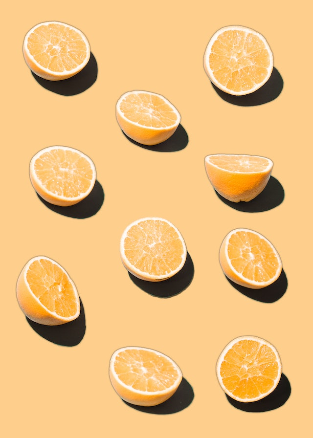

heads
0 1 2 3 4 5 6 7 8 9 10
9 110 413 1145 2096 2446 2066 1141 469 97 8 

There is a famous story about a lady who claimed that tea with milk tasted different depending on whether the milk was added to the tea or the tea added to the milk. The story is famous because of the setting in which she made this claim. She was attending a party in Cambridge, England, in the 1920s. Also in attendance were a number of university dons and their wives. The scientists in attendance scoffed at the woman and her claim. What, after all, could be the difference?
All the scientists but one, that is. Rather than simply dismiss the woman’s claim, he proposed that they decide how one should test the claim. The tenor of the conversation changed at this suggestion, and the scientists began to discuss how the claim should be tested. Within a few minutes cups of tea with milk had been prepared and presented to the woman for tasting.
At this point, you may be wondering who the innovative scientist was and what the results of the experiment were. The scientist was R. A. Fisher, who first described this situation as a pedagogical example in his 1925 book on statistical methodology[^1]. Fisher developed statistical methods that are among the most important and widely used methods to this day, and most of his applications were biological.
Let’s try an experiment. I’ll flip 10 coins. You guess which are heads and which are tails, and we’ll see how you do. Please write down a sequence of “H” or “T”. Comparing with your classmates, we will undoubtedly see that some of you did better and others worse.
What would be your impression of one of you got 9 guesses correct? Is that SKILL or is that something else? What would be your immediate reaction and next move?
Back to the Lady who drank Tea !!
Let’s suppose we decide to test the lady with ten cups of tea. We’ll flip a coin to decide which way to prepare the cups. If we flip a head, we will pour the milk in first; if tails, we put the tea in first. Then we present the ten cups to the lady and have her state which ones she thinks were prepared each way.
It is easy to give her a score (9 out of 10, or 7 out of 10, or whatever it happens to be). It is trickier to figure out what to do with her score. Even if she is just guessing and has no idea, she could get lucky and get quite a few correct – maybe even all 10. But how likely is that?
Now let’s suppose the lady gets 9 out of 10 correct. That’s not perfect, but it is better than we would expect for someone who was just guessing. On the other hand, it is not impossible to get 9 out of 10 just by guessing.
So here is Fisher’s great idea: Let’s figure out how hard it is to get 9 out of 10 by guessing. If it’s not so hard to do, then perhaps that’s just what happened ( that she was guessing ), so we won’t be too impressed with the lady’s tea tasting ability. On the other hand, if it is really unusual to get 9 out of 10 correct by guessing, then we will have some evidence that she must be able to tell something ( and has an unusual Skill).
But how do we figure out how unusual it is to get 9 out of 10 just by guessing? Let’s just flip a bunch of coins and keep track. If the lady is just guessing, she might as well be flipping a coin.
So here’s the plan. We’ll flip 10 coins, and repeat that experiment 10000 times. We’ll call the heads correct guesses and the tails incorrect guesses.
heads
0 1 2 3 4 5 6 7 8 9 10
9 110 413 1145 2096 2446 2066 1141 469 97 8
So what do we conclude? It is possible that the lady could get 9 or 10 correct just by guessing, but it is not very likely (it only happened in about \(\frac{97+8}{10000} = 1.05\%\) of our simulations). So one of two things must be true:
• The lady got unusually “lucky”, by chance; OR
• The lady is not just guessing and really has some ability in this regard.
First we realize something is surprising, and that we have a question or doubt. This is based on something we see, or measure, a test statistic. In our story, it is the score of \(10/10\) that the Lady was able to achieve about how the Tea was made.
We then assume the Lady is guessing and somehow by chance able to guess correctly. This would be our….NULL Hypothesis. This is our (conservative) belief about the Real World.
We then randomly generate many Parallel Counterfactual Worlds, where we repeat the experiment many many times, each time calculating the test statistic, under the assumption of the NULL Hypothesis is TRUE.
We see how often our Parallel Worlds can mimic or exceed Real World measurement of the the test statistic by comparison. If this is common (i.e. probability is high) we say we cannot reject the NULL Hypothesis (and the Lady is lucky). If the occurrence is rare, as in our case, we say we have reason to reject the NULL Hypothesis and reason to believe an underlying pattern (and Lady’s ability is beyond Question !)
This is the essence of the Simulation Method in statistical modelling. Take one more look at the picture from Allen Downey’s blog, below:

From Reference #1:
Hypothesis testing can be thought of as a 4-step process:
State the null and alternative hypotheses.
Compute a test statistic.
Determine the p-value.
Draw a conclusion.
In a traditional introductory statistics course, once this general framework has been mastered, the main work is in applying the correct formula to compute the standard test statistics in step 2 and using a table or computer to determine the p-value based on the known (usually approximate) theoretical distribution of the test statistic under the null hypothesis.
In a simulation-based approach, steps 2 and 3 change. In Step 2, it is no longer required that the test statistic be normalized to conform with a known, named distribution. Instead, natural test statistics, like the difference between two sample means \(y1 − y2\) can be used.
In Step 3, we use randomization to approximate the sampling distribution of the test statistic. Our lady tasting tea example demonstrates how this can be done from first principles. More typically, we will use randomization to create new simulated data sets ( “Parallel Worlds”) that are like our original data in some ways, but make the null hypothesis true. For each simulated data set, we calculate our test statistic, just as we did for the original sample. Together, this collection of test statistics computed from the simulated samples constitute our randomization distribution.
When creating a randomization distribution, we will attempt to satisfy 3 guiding principles.
Be consistent with the null hypothesis. We need to simulate a world in which the null hypothesis is true. If we don’t do this, we won’t be testing our null hypothesis.
Use the data in the original sample. The original data should shed light on some aspects of the distribution that are not determined by null hypothesis. For example, a null hypothesis about a mean doesn’t tell us about the shape of the population distribution, but the data give us some indication.
Reflect the way the original data were collected.
From Chihara and Hesterberg:
This is the core idea of statistical significance or classical hypothesis testing – to calculate how often pure random chance would give an effect as large as that observed in the data, in the absence of any real effect. If that probability is small enough, we conclude that the data provide convincing evidence of a real effect.
Chapter 11, Hypothesis Testing with Randomization in Introduction to Modern Statistics (1st Ed) by Mine Çetinkaya-Rundel and Johanna Hardin.
R.A. Fisher. Statistical Methods for Research Workers. Oliver & Boyd, 1925
Laura Chihara, Tim Hesterberg, Mathematical Statistics with Resampling and R, Wiley, 2019.
D. Salsburg. The Lady Tasting Tea: How statistics revolutionized science in the twentieth century. W.H. Freeman, New York, 2001
Daniel Kaplan, Nicholas J. Horton, and Randall Pruim, Simulation-based inference with mosaic https://www.mosaic-web.org/mosaic/articles/Resampling.html